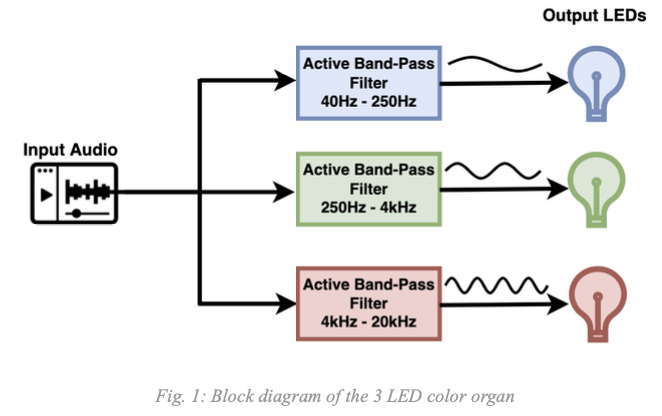
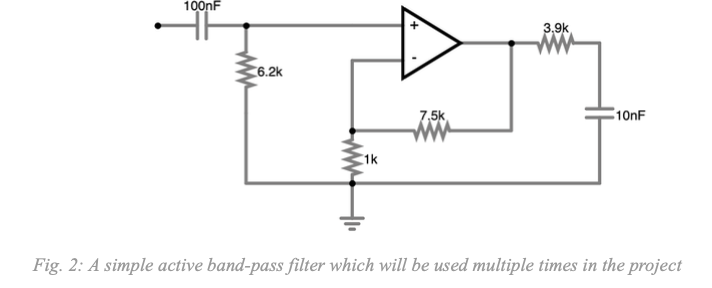
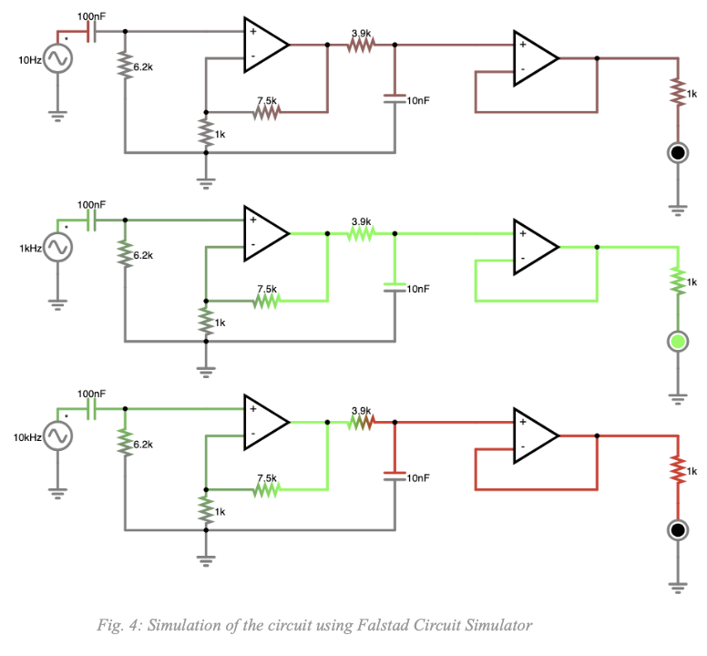
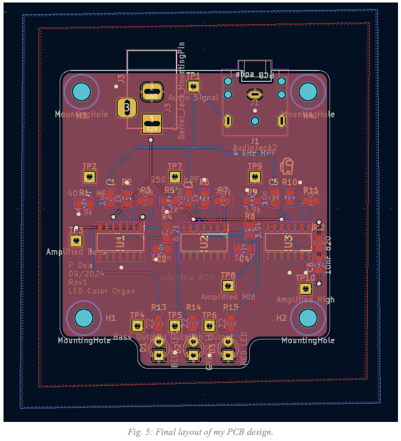
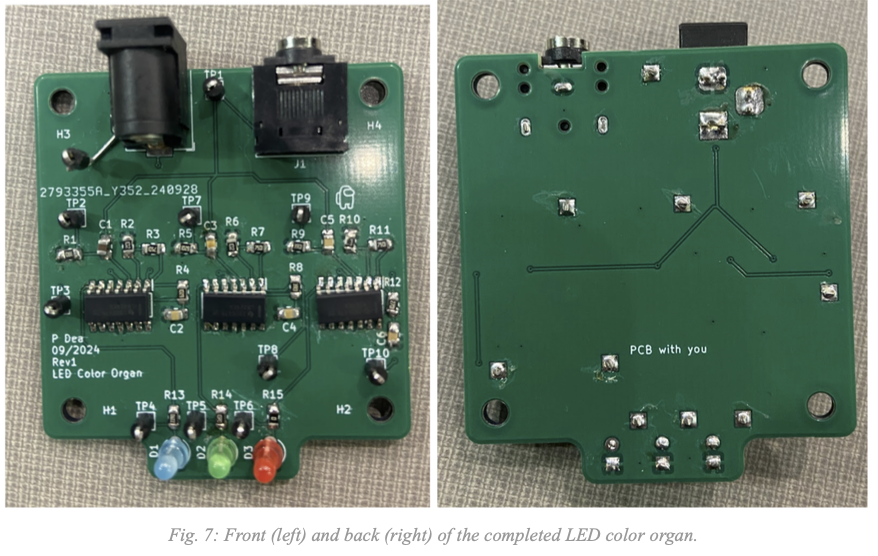
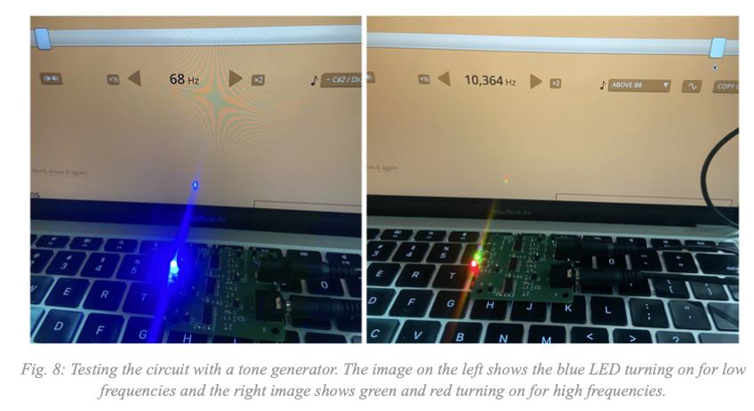

LED Color Organ
Fall 2024

For this project I was assigned to follow all of the design steps required to create a printed circuit board (PCB). This includes conceptualizing the project, drafting the schematic, simulating the circuit, creating the PCB layout, ordering components, and soldering the board. There were some constraints I had to keep in mind when creating this project such as a maximum board size, including at least one IC, and staying within the budget of $35. Knowing all of this, I chose to design a color organ.
I began by designing a schematic using circuit knowledge I have learned from my previous circuits classes. After creating an initial schematic I simulated it using a circuit simulator to see whether it would theoretically work. I had to go back and forth a bit between designing and simulating to eventually reach a circuit that I believed would work. After this I began creating a PCB layout using the knowledge I have acquired from this class (EE 333: Electronic Systems Design). After ensuring that the layout matched all design requirements, I went to DigiKey to choose my components and create a Bill Of Materials (BOM). I then submitted my BOM, Schematic, and Gerber files (from my PCB layout) to my professor who then ordered the components. A couple weeks later my PCB and components arrived and I was able to begin soldering the board. Upon completion of soldering, I was able to begin testing the circuit. When I tested the circuit, it seemed to work very well, with only a few minor adjustments needing to be made.
The goal of this project was to create a working 3 LED color organ. A color organ is a device that takes an audio signal as an input and then shines different lights corresponding to the different component frequencies of the input. The lights within my project are 3 different LEDs: One for “Bass” frequencies (blue LED), one for “Mid” frequencies (green LED), and one for “High” frequencies (red LEDs).
In order to split the audio frequencies into their component frequencies I use a series of filters that would pass through the frequencies that should turn on its corresponding LED and reject other frequencies. Specifically, I use 3 first-order active band-pass filters that use specific resistor and capacitor values in order to fine tune their cutoff frequencies. The reason these filters must be active is because for the LEDs I use in this project I need 3 volts in order to turn them on and audio signals only provide roughly 0.5 volts, this means that amplification is needed in order to turn on an LED.
A crucial part of this project is classifying which frequencies should be considered bass, mid, or high. The spectrum of audible frequencies to humans is roughly 40 Hz to 20 kHz, but due to the way we perceive audio it would not feel right to split this into 3 even categories of frequencies. Instead, higher frequencies need a much larger range of frequencies than lower frequencies do. Thankfully there are many resources on ways to split up frequencies in a way that feels intuitive to a listener. After looking into this I settled on 40 Hz-250 Hz for bass, 250 Hz-4 kHz for mid, and 4 kHz to 20 kHz for high. After using these fine-tuned filters to split the input audio into these component frequencies,the output signal just needs to be passed through the LEDs to turn them on or off when needed.
The next step after determining these initial concepts for the project is to create a schematic for the circuit. This is where I translate the concepts into tangible circuit components which can be purchased. Thankfully, the nature of this project is such that I can reuse the same design for the different sections of the project multiple times. For example, the active band-pass filter for the bass frequencies uses the same design as that of the high frequencies, just with different resistor and capacitor values. In fact, a bulk of the schematic design for this project was simply the design of these filters, which I have studied in length in EE 230: Electronic Circuits.
Below is shown the final schematic for the project, which was created using KiCad.

There are a number of things to note about this schematic. In the top left corner there are the two inputs to the circuit: An audio jack and a 12 volt barrel jack input. The audio jack is needed to provide the input audio signal from a standard aux cord. The barrel jack is needed in order to provide external power from an outlet to the OpAmps within the circuit. This power is needed in order to amplify the input signals of these amplifiers.
The three sections in the middle of the project include the 3 different band-pass filters. The filters use resistor and capacitor values which are chosen to achieve the desired cutoff frequencies. The output of the bandpass filter goes into another OpAmp that functions as a buffer. The purpose of this buffer is to provide current to the LEDs. At first I did not use this buffer, but given the design of the band-pass filter, if the 20 mA that are needed to turn on a standard LED were to be provided from the first OpAmp they would have to go through the resistor in the high-pass portion of the filter, which has a resistance of up to 6.2 kilo-ohms. This would require 124 volts to drop across that resistor which is far higher than this circuit is able to provide. The buffer bypasses this problem due to its high input impedance and low output impedance.
The top-right portion of the schematic has the 3 LEDs, each with a 22 ohm resistor in series to regulate current. These LEDs take as input the output of the buffers, which will ideally include the desired frequencies with proper amplification.
Also included in the schematic are the 4 mounting holes of the circuit. It is required that these are included in order for me to be able to include them in my layout later.
Before arriving at the final schematic, I ran several simulations of various iterations of this circuit using an online circuit simulator called Falstad. Below is a screenshot of a simulation of the mid frequency band-pass filter. This depicts the functionality of the circuit by showing it with an input frequency that is too low at 10 Hz (top), one that is just right at 1 kHz (middle), and one that is too high at 10 kHz (bottom). The functionality of the circuit is proven by the fact that the LED is only on for the middle frequency.
After I was confident that my schematic would work, I began to create the layout of the circuit. This is where I was getting to put to use the knowledge and skills that I have learned from this class. In order to challenge myself, I decided to limit myself to a 50mm x 50mm area for my PCB instead of the allowed 100mm x 100mm. Another important decision I made was to use 3 ICs for my amplifiers. I could have gotten away with using only 2 because each has 4 amplifiers within it and I only needed 6, but I decided for simplicity I would use 3 so that each filter would be on a separate amp.
Below is an image of the finalized layout of my PCB.
From this layout, the circuit can be “read” from top to bottom. The top portion of the PCB has the power input (left) and audio input (right). Which then gets split into 3 paths in order to go through the separate filters, which are shown by the IC and resistor/capacitor pads. All paths then converge back together at the bottom portion of the PCB where there is a notch that the LEDs lie on.
The mounting holes are on the four corners of the circuit in case I want to mount this to something in the future. There are also various test points littered throughout the circuit for testing the circuit when it is done being soldered. I was also tasked to play around with the silkscreen so I included a fun quote on the back and an image of the character from the gamer Among Us in the top-right quadrant of the board.
Below are some 3D views of the PCB from within the KiCad software. From here you can see the front of the board was the layer that was primarily used and the back was only used to route the power supply to the OpAmps.

A couple weeks after submitting to my professor my schematic, gerber files (generated from my layout by KiCad) and list of components I needed, everything arrived and I began to solder my project. This was definitely the hardest project I have ever had to solder given all of the small surface mount components and the ICs with several pins. Regardless, I able to complete the soldering of the board with very little setbacks. The following page includes images of both the front and the back of the physical PCB after I finished soldering everything to it.
The final step was to test whether the project worked. To do this I plugged the power supply into the outlet and hooked up the audio input into a computer. I started playing some music from the computer and immediately some LEDs started to turn on. I went to a website that would generate a constant tone of any desired frequency and I slowly increased the frequency to see if each LED would turn on when expected. I did this the order in which each LED would turn on was exactly as I wanted: blue would turn on for bass frequencies, green for mids, and red for high. There were a couple notable issues though. The most obvious was the fact that the blue LED would shine significantly brighter than the other LEDs. Another issue was that the cutoff frequencies seemed slightly off because by the time the blue LED turned off the red LED already turned on, meaning there is no frequency at which only the green LED would be on.
I decided to address the first issue by shorting the current-limiting resistor on both the green and red LEDs by using a 0 ohm resistor with the same footprint as my previous one. The second issue proved to not be as simple to fix, however I was already greatly satisfied with the way my project worked so this issue is still present in the final circuit. The next section of this report will cover what I would do differently if I were to ever revise this circuit and potential fixes I could incorporate without doing a full revision of the board.
Another issue I experienced during my testing was that it appeared that as I increased the frequency of the tone being generated, the LEDs would get dimmer, then brighter several times within their frequency range. The expected functionality would be for the LEDs to slowly get brighter until they hit their peak brightness, then lower until they are dim once again. Instead I was experiencing these cycles of high and low brightness. I determined the issue here to be external and due to the computer I was using, as when I switched to my laptop (which likely had a nicer sound card) this issue went away.
While I was very excited that most of the functionality of this circuit appeared to work as I intended, there are still some things that I would fix if I get the chance to modify this board.
One such fix would be relatively simple and would likely not require a new board. Instead, I believe if I were to increase the low-pass cutoff frequency of the high band-pass filter (red) and decrease the high-pass cutoff frequency of the bass low-pass filter (blue) I think I should end up with a much smaller frequency range for both the blue and red LEDs, hopefully leading to there being a noticeable range of frequencies where only the green LED would turn on. This could be accomplished by simply choosing new resistor and capacitor values for the bandpass filters for bass and high frequencies.
Another improvement that would require a board revision would be to change the band-pass filter to have quicker cutoffs when passing the cutoff frequency. This could be accomplished by using second order low-pass and high-pass filters within the band-pass filter instead of just first order ones. I could continue increasing the order as needed until I was satisfied with the functionality of each filter as it is swept through multiple frequencies.
Finally, there is still much I can learn about good practice in PCB design, specifically in regard to the creation of the layout. For instance, after learning more within class I believe that I would have been better off being much more liberal with my use of vias as they can help provide a consistent common ground between two layers of my PCB.
Overall I am very satisfied with the way this project turned out. This was my first project in which I saw through the entire creation of a PCB from start to finish and it felt like I got to bring together a lot of the skills that I have learned as an electrical engineering student over the years. I started by conceptualizing my circuit, then I created a schematic which went through several revisions as I tested it, then I created the layout of my PCB, then soldered it a few months later, and finally I got to test it and make simple revisions until I was satisfied with the way it worked. There are many revisions that I would make if I were to start this project over again, but I believe that it taught me a lot about a variety of skills that I will be able to take into the next project. On top of all of the skills I have acquired, I also now have a cool color organ that can make LEDs dance to the music that I am listening to.
<- Back to Home